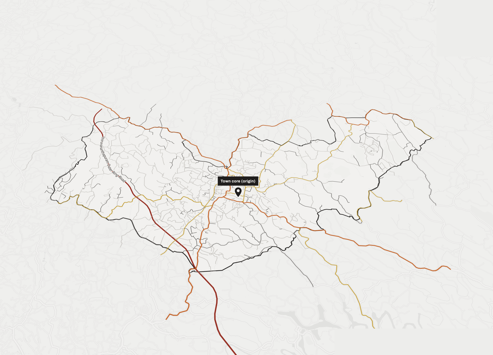
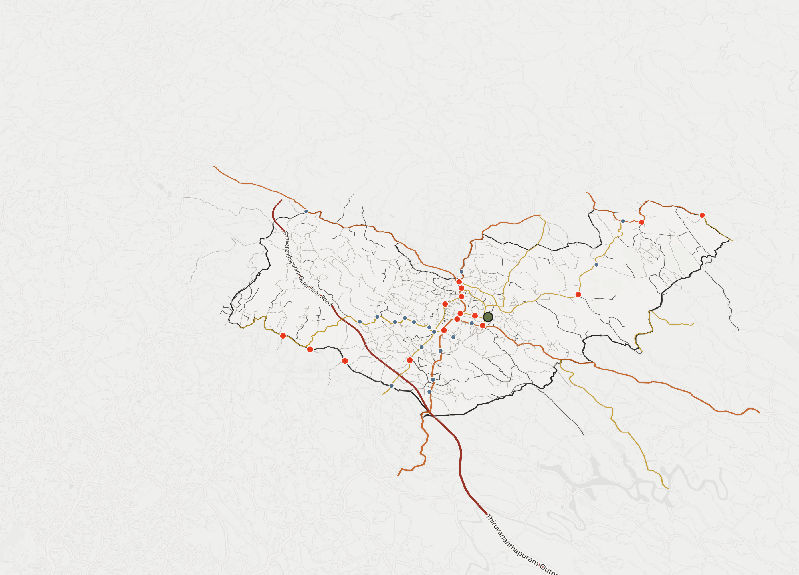
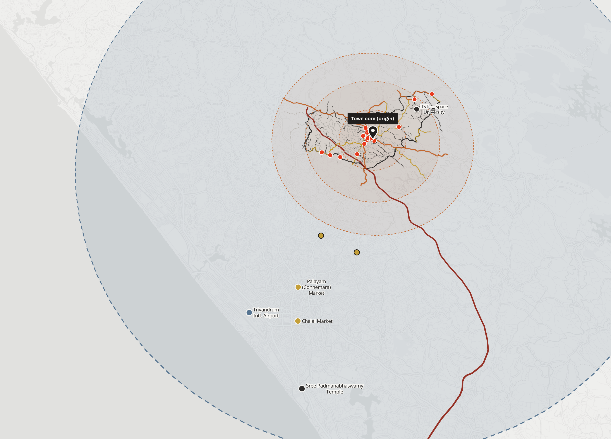
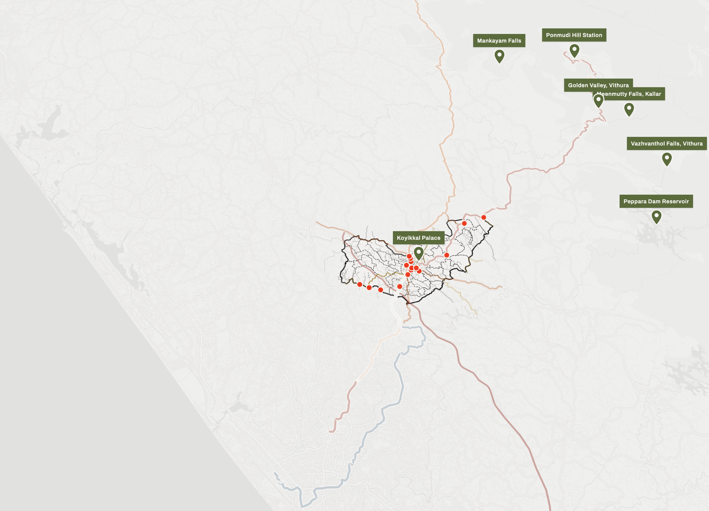
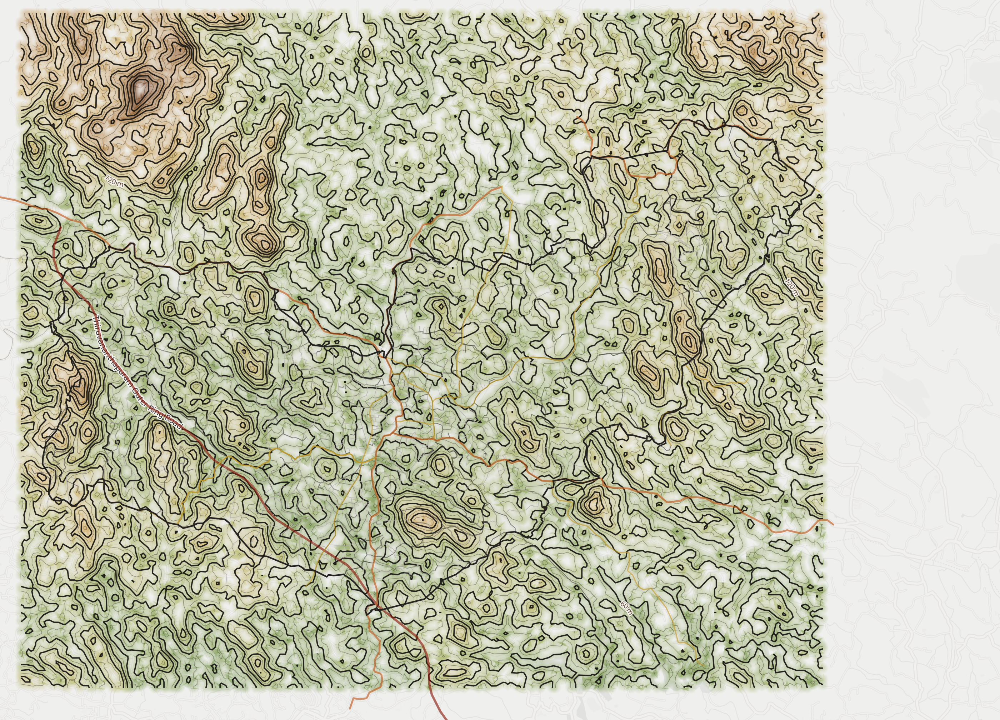
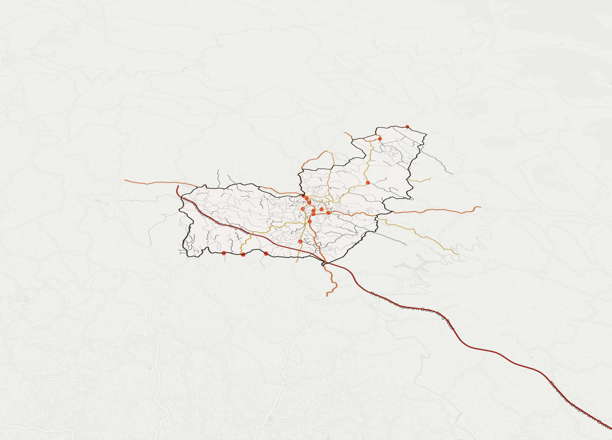

Evolution of the Road Network & Transportation System
Nedumangad Municipality · Nedumangad Taluk · Thiruvananthapuram District · Kerala
≈ 60,161
Population (Census 2011)
8.60° N
Latitude · 77.00° E
≈ 18 km
NE of Thiruvananthapuram
Six plates
Spatial reading of the town
Contents
01
Municipal Framework & Road Hierarchy
02
Transportation Network — Junctions & Stops
03
Accessibility & Regional Reach
04
Wards, Corridors & Region
05
Topography & Terrain
06
Historical Evolution — Interpretive
Cartography — MapLibre GL · OpenStreetMap · CARTO
Nedumangad Interactive Digital Atlas
01
Municipal Framework
Boundary & Road Hierarchy
Nedumangad Municipality Scale ~1 : 55,000 @ A3 North up

N▲
Plate 01 — Road hierarchy
National Highway
State Highway
Major District Road
Municipal Road
Local Road
Municipal boundary
Town core (origin)
The municipality reads as a single fabric threaded by a clear road hierarchy. A state-highway spine crosses the town core while major district roads radiate outward, and the fine grain of municipal and local roads fills the wards — the geometry every later plate builds on.
02
Transportation Network
Junctions, Bus Stand & Stops
Nedumangad Municipality Points over road base North up

N▲
Plate 02 — Transport points
Junction
Bus stand / station
Bus stop
Road hierarchy (context)
Public movement concentrates at the town junctions and the bus stand, with stops strung along the primary corridors. The clustering confirms the core as the town's single interchange — where every route in the network resolves.
03
Accessibility
Regional Reach & Service Radius
Town core → region Rings measured from core North up

N▲
Plate 03 — Accessibility
Airport reach (≈ 22 km)
Walking-time rings (5·10·15 min)
Road destination
Market in reach
Junction
Measured from the town core, Nedumangad sits within ≈ 22 km of Trivandrum International Airport and a short drive from the district's markets and institutions. Concentric walking-time rings show how compact the core is — most civic destinations fall inside the fifteen-minute band.
04
Region
Wards, Corridors & Tourist Places
Municipality & surroundings Corridors from route data North up

N▲
Plate 04 — Wards & corridors
Bus corridor (in & out)
Ward boundary
Tourist place
Junction
The town's in-and-out corridors — toward Ponmudi, Palode–Tenkasi and the airport — stitch the wards to the wider region, while nearby tourist places in the Ghats feed movement back through the core. Ward boundaries locate which neighbourhoods each corridor serves.
05
Topography
Terrain & 20 m Contours
Municipality extent Contour interval 20 m North up

N▲
Plate 05 — Topography
40–100 m
100–160 m
160–220 m
220–290 m
Contour line (20 m)
Roads (context)
The land climbs from the valley floor toward the Ghats in the north-east. Black 20 m contours over a graded elevation wash reveal the ridges and stream valleys that constrained where roads and settlement could go — the terrain logic beneath the network.
06
Historical Evolution
From Trade Routes to Network
Interpretive reconstruction Town & core corridors North up

N▲
Plate 06 — Historical evolution
Koyikkal Palace (c. 1677)
Nedumangad Chantha (market)
Present network (context)
Interpretive reconstruction based on available historical evidence. A royal seat at Koyikkal and the hill-produce trade fixed the market as the town's centre of gravity; the roads that grew inward toward the chantha are the same axes the modern network still follows.